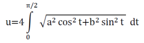

Numerische Integration
y =

x0:
xn:
Anzahl Teilintervalle (max 200):
Graphik
Resultate
Trapez:
Simpson:
Links:
Rechts:
Mitte:
Nach einer Änderung in einem Eingabefeld müssen Sie auf Berechne! klicken. Die Return-Taste genügt nicht.
Die Simpson-Methode benötigt eine gerade Anzahl Intervalle
Anwendungsbeispiel: Wie gross ist der Umfang u einer Ellipse mit den Halbachsen a = 11 und b = 1.75?
Für das (elliptische!) Integral  gibt es keine exakte Formel.
Geben Sie also bei y = die folgende Funktion ein: 4*sqrt(11*11*cos(x)*cos(x)+1.75*1.75*sin(x)*sin(x))
bei x0 = 0 und bei xn = 1.5707963267948966 (copy and paste!).
Wählen Sie für die Anzahl Intervalle 40, klicken Sie dann auf 'Berechne!' und Sie erhalten den Simpson-Wert u = 45.528581.